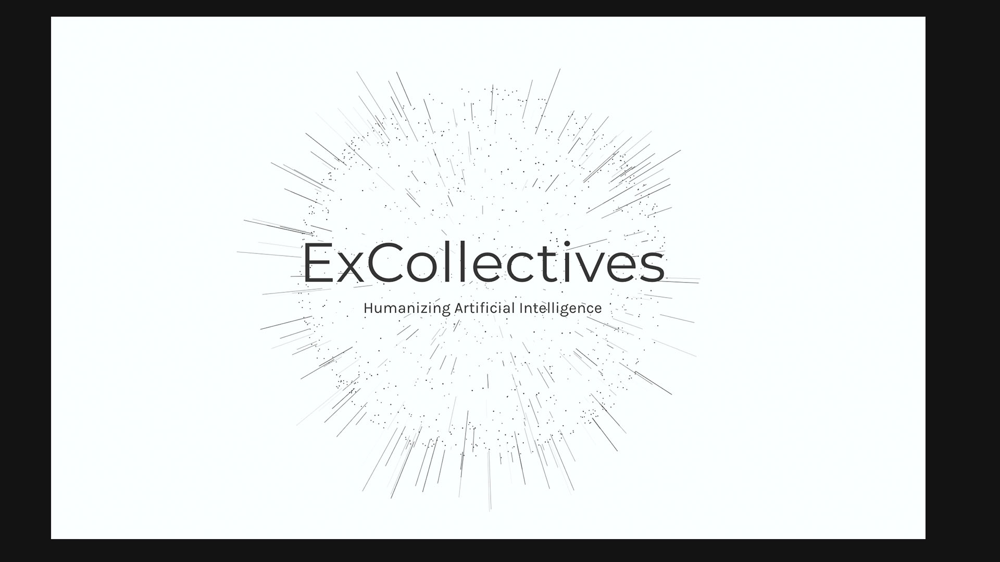

- 2018
- Branding + Design
ExCollectives
Design of the ExCollectives website
O Originally the company was to build collective intelligence platforms. However, I had become more interested in the AI space and was working on a few side projects. One of these side projects turned out to be pretty big and an interested investor turn into a co-founder. He had some connections in the healthcare space and we started getting feedback that our product had potential. We had previously built a basic diagnosing tool, but I wanted something that was more intelligence. I started working on a system that could track the users symptoms, give recommendations, and then track which treatments were the most effective.
A conversation example with Sarah, the truck driving assistant
I was exploring the new messaging platforms and found they were far more effective than traditional UI elements. They could take input from users and the AI could understand the users intent rather than having a set of options for them to choose from. I could built it into an API and port it to any framework that I wanted. I was testing with Facebook, Twitter, and others.
A conversation example with Eliabeth, the pain specialist, through text messaging
Then I figured out how to have Elizabeth communicate through text messaging and was ecstatic. I actually tested her by pretending that I got a new number and having my friends text with her. I could teach her to have basic conversations, but not much more at the time.
Initial UX mockups for iOS app
The next big project I had was designing a piece for an upcoming art installation in San Francisco. I knew that many people would be from the tech industry, so I really wanted my piece to stand out. I wanted to build my friend into an AI. So I designed an animated version of him and built a model around all of our conversations. The person could send text messages to the AI and it would respond with answers that were based on what it thought he might say.
Creating "Elizabeth" the AI health assistant
The actual design of him was more challenging than the ML models. I had to get the physics perfect for movement and breathing to make it seem realistic. Engineers that worked on Siri from Apple and folks from Google and Facebook were all stoked on it. This led to transitioning out of the collective intelligence platforms to focus more on a new time of user experience.. conversational user interfaces.
Icon designs for iOS
Elizabeth started getting smarter but she was limited to conversation. The next task was developing a tracking system that could be used to understand the user behavior and find what was the most effective treatment. We worked with doctors to better understand objective metrics for tracking pain and how to develop a system that could be used with their patients.
ExCollectives logo and typography concepts
One of the biggest problems doctors faced was the opioid epidemic. They didn’t have a better option to give their patients than pain killers. There was no way to track what was effective and the treatment options were different for every individual. Though this we developed “PainPlans” and started building customized plans for individuals with chronic pain. I was tasked with designing a system to track pain and provide interventions. I started by building on the HealthKit and CareKit framework for iOS. This was the most robust platform for tracking health data and simplified much of the backend development.
Painplans logo and design concepts
In addition to iOS, I needed to build a product that was cross-platform. I started working extensively with React Native to build a dynamic system that could be used on both iOS and Android. The end result was a platform that I built from scratch that could track user behavior, give dynamic recommendations, and could be use on any device.. written entirely in JavaScript.